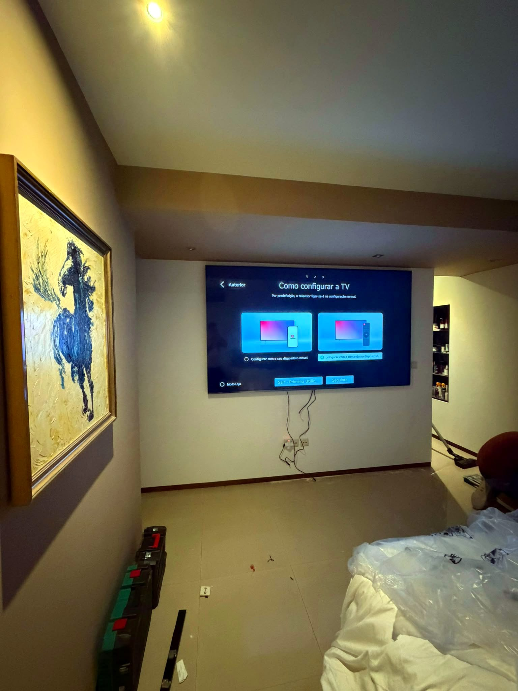
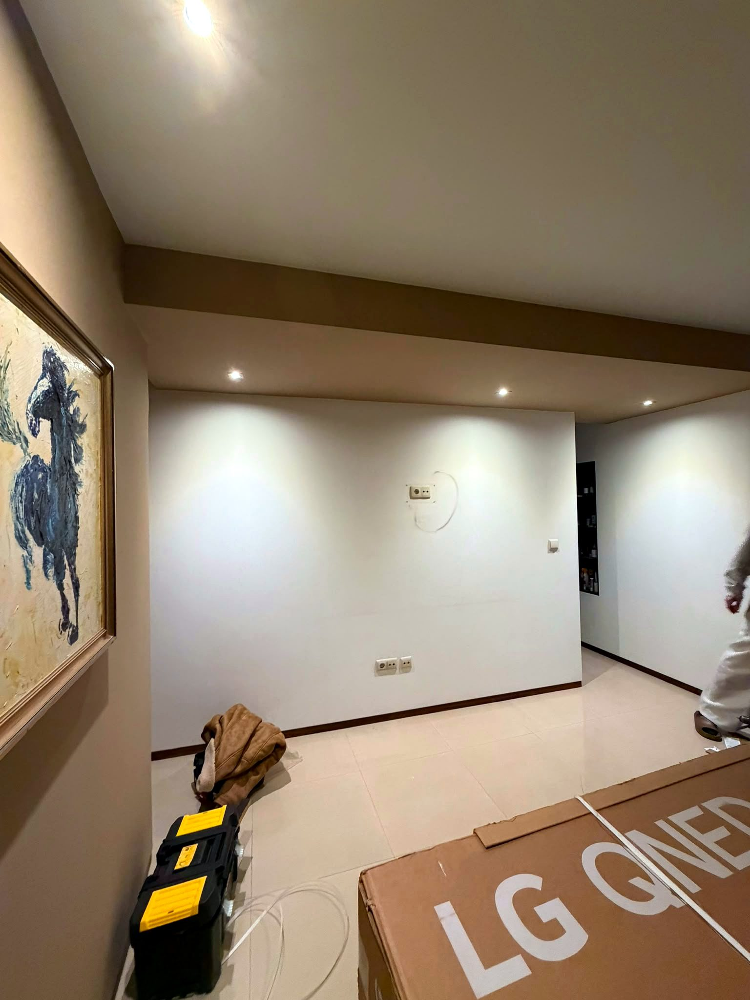
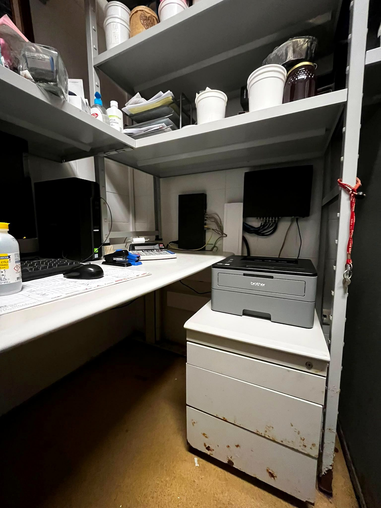
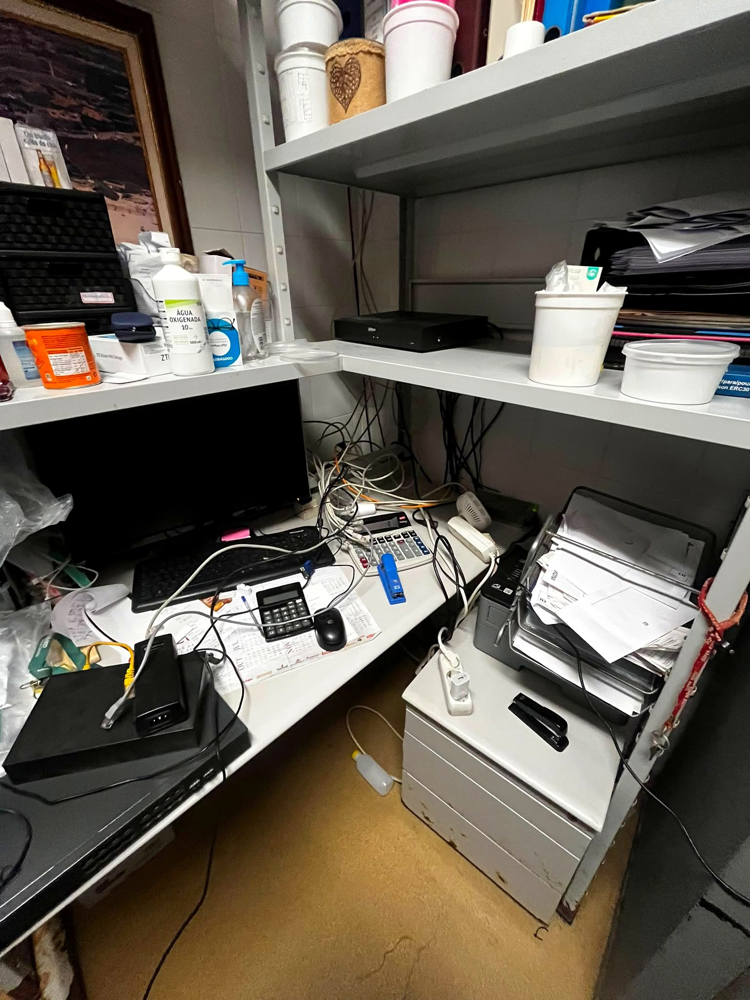

Redes, Wi-Fi
e sites
Passamos cabos, melhoramos a internet em casa, montamos e ligamos televisões — e também criamos sites simples para pequenos negócios.
Muitos problemas de internet resolvem-se com um cabo no sítio certo ou com o Wi-Fi bem posicionado. A Dizarro trata disso, monta e liga a televisão, e cria sites simples e rápidos, como o que está a ver.
O que fazemos
- Passagem de cabo de internet e de TV
- Otimização do Wi-Fi: reposicionar o router, repetidores e pontos de acesso
- Montagem e ligação de televisões (suporte, cabos e configuração)
- Pontos de rede e de TV
- Arrumação de cabos e do router
- Criação de sites simples para pequenos negócios (como este)
Como trabalhamos
Vemos onde falha o sinal, passamos o cabo ou mudamos o Wi-Fi de sítio, e deixamos tudo a funcionar. Para o site, tratamos dos textos, das fotos e da publicação.
Criação de sites
Fazemos sites simples como este: rápidos, adaptados ao telemóvel e fáceis de encontrar no Google. Uma página ou poucas páginas para pequenos negócios. Tratamos dos textos, das fotos, do domínio e da publicação.
Exemplo real
Televisão de 100 polegadas: da parede vazia, com a caixa ainda no chão, à televisão montada e a arrancar a configuração.
Antes & depois — trabalho real
Televisão: de pousada em cima do móvel a fixa na parede. E cabos: de uma secretária com cabos soltos a um posto de trabalho arrumado.
Telecom · televisão na parede


Telecom · televisão de 100 polegadas


Telecom · cabos e secretária arrumados

